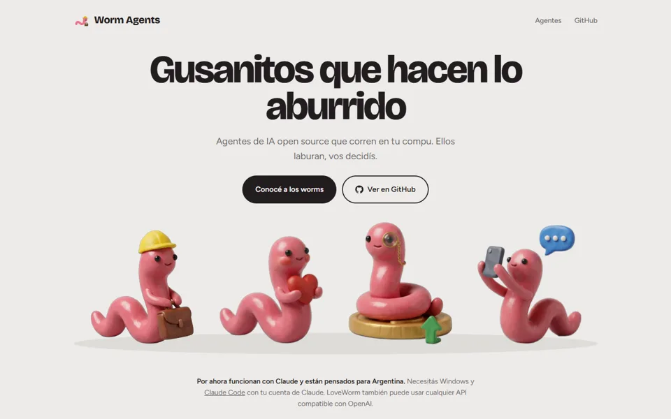
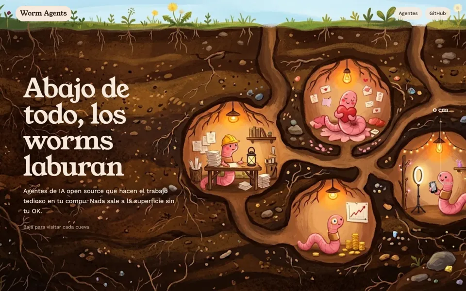
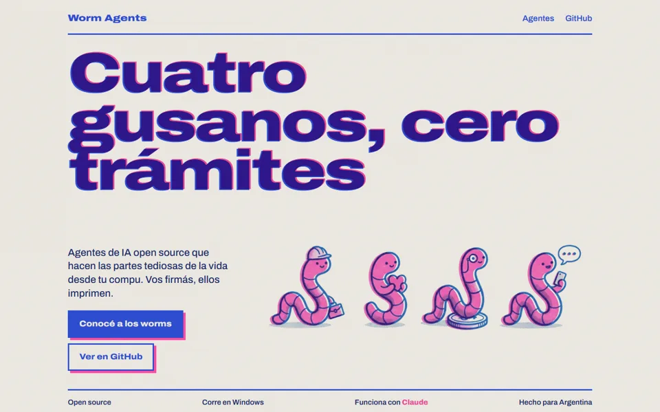
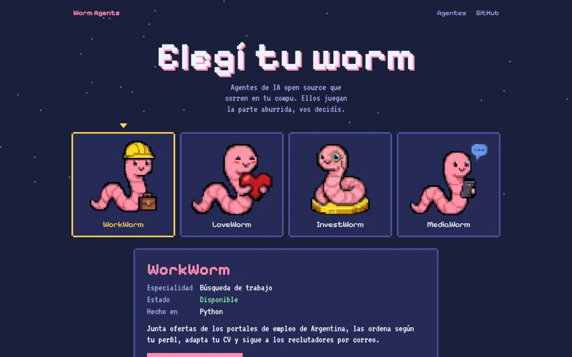
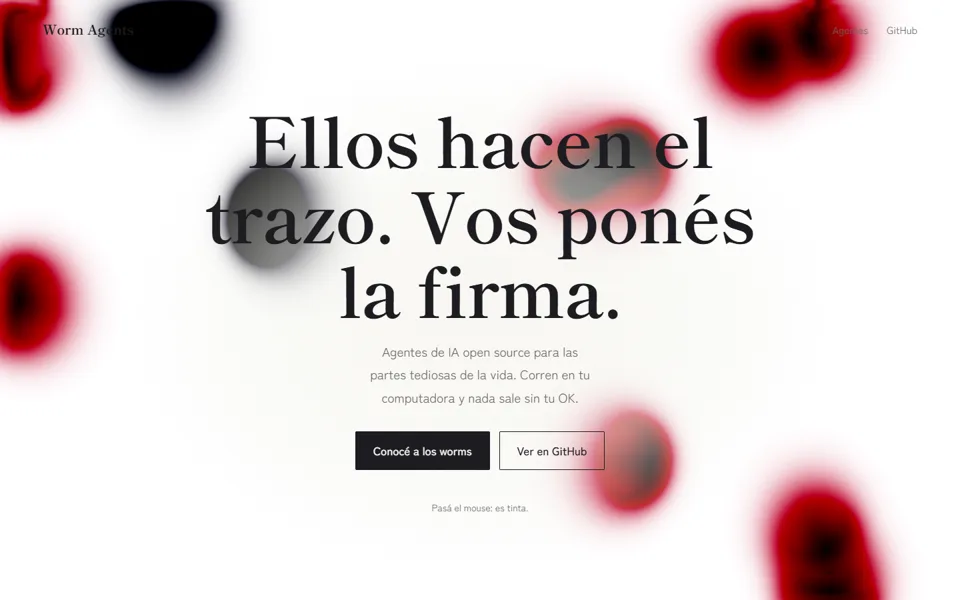

Mismo contenido, cinco direcciones distintas. Los gusanos de cada una los generó Gemini; el resto está hecho a mano en HTML y CSS. Se pueden mezclar: elegí lo que te guste de cada una.

Gusanos de plastilina 3D parados en un estante. Caen con rebote al cargar, respiran, y saltan al pasar el mouse.
Gemini + rembg para recortar, animaciones con resortes al estilo Emil Kowalski
Un corte de tierra ilustrado. Al scrollear la cámara entra a cada cueva y va cavando hacia abajo, con un medidor de profundidad.
Cinco ilustraciones de Gemini encadenadas, cámara guiada por el scroll
Un fanzine impreso en risografía con dos tintas. El titular se registra al cargar y los círculos a mano se dibujan solos.
Rough.js para el trazo a mano, tintas en modo multiply, grano de papel
Una pantalla de selección de personaje de 16 bits. Se elige el worm con el mouse o con las flechas del teclado.
Sprites de Gemini llevados a su grilla real de píxeles
El fondo es tinta líquida que sigue al mouse, como papel marmolado. Los worms aparecen en rollos colgantes pintados a pincel.
WebGL Fluid Simulation adaptada a tinta sobre papelLa landing actual sigue en worm-agents.com hasta que elijas.